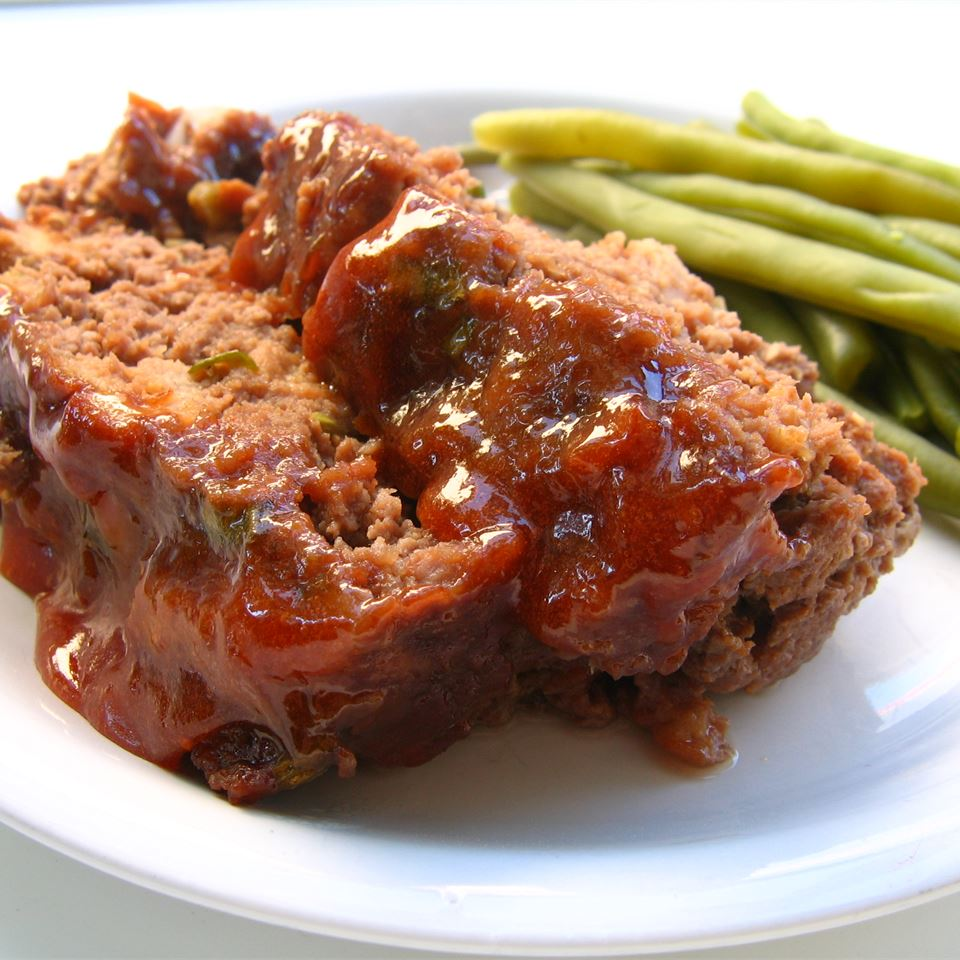

Glazed Meatloaf

Description
This is another recipe for a delicious
Meatloaf.
Ingredients
- 1/2 cup ketchup
- 1/3 cup brown sugar
- 1 table spoon lemon juice
- 1 teaspoon dry mustard
- 2 pound lean ground beef
- 3 slices brad, shredded
- 1/4 cup diced onion
- 1 egg, beaten
- 1 cube beef bouilon, crumbled
- 3 tablespoons lemon juice
Steps
- Preheat oven to 350 degrees F (175 degrees C).
- In a small bowl, combine ketchup, brown sugar, 1 tablespoon lemon juice and dry mustard until smooth.
- In a large bowl, combine ground beef, shredded bread, onion, egg, bouillon, 3 tablespoons lemon juice, and 1/3 cup of the ketchup mixture until well mixed. Form into a loaf and place in a 9x5 inch loaf pan.
- Bake 1 hour. Pour off fat. Pour reserved ketchup mixture over loaf. Bake 10 minutes more.